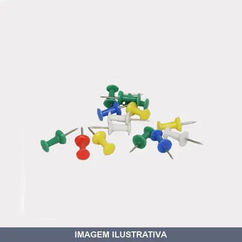
ALFINETE CORES SORTIDAS COM UND BRASFORT
Alfinete para uso em quadros de avisos, mapas, murais de cortiça e decoração. Material: Ponta em aço e cabeça em plástico resistente. Cores sortidas (azul, amarelo, vermelho, verde e branco). Quantidade: 15 unidades. Permite fixação firme e facilita remoção sem danos excessivos.
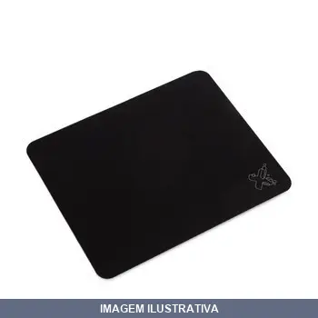
BASE PARA MAUSE PAD PRETO SIMPLES MAXPRINT
Indicação de Uso: Base/suporte para mouse pad, destinada a estabilizar e organizar o mouse pad sobre a superfície de trabalho. Material e Resistência: Construída em material resistente com acabamento preto. Vantagem Prática: Proporciona estabilidade ao mouse pad, evitando deslocamentos durante o uso.
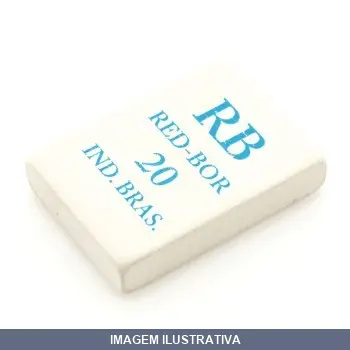
BORRACHA ESCOLAR BRANCA
Indicação de Uso: Escolar, para apagar traços de lápis em cadernos e folhas. Material e Resistência: Composição de borracha natural e sintética com cargas e pigmento branco. Formato retangular, atóxica e livre de ftalato. Certificada INMETRO. Vantagem Prática: Textura macia que apaga sem danificar o papel, gera menos resíduos.
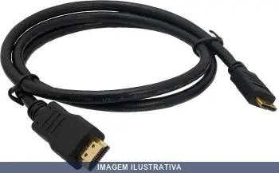
CABO HDMI PARA TV LCD PLASMA .0MT INTERNEED
Indicação de Uso: Conexão de dispositivos em televisores LCD e Plasma. Material e Resistência: Cabo com conectores HDMI para transmissão de sinais de vídeo e áudio. Vantagem Prática: Permite conexão entre equipamentos audiovisuais e TV, facilitando a exibição de conteúdo em tela grande.
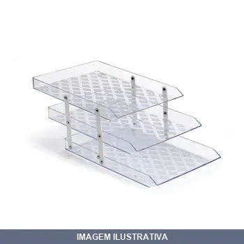
CAIXA PARA CORRESPONDENCIA TRIPLA CRISTAL
Indicação de Uso: Organizador destinado ao recebimento e organização de correspondência, adequado para uso em ambientes internos, como escritórios. Material: Fabricado em material cristal (acrílico ou policarbonato). Vantagem Prática: Compartimentos triplos permitem separação de diferentes tipos de correspondência ou documentos.
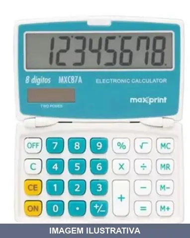
CALCULADORA BOLSO DIGITOS MX-C MAXPRINT
Calculadora eletrônica de bolso com 8 dígitos. Corpo em plástico com teclas macias. Funções básicas: soma, subtração, divisão, multiplicação, raiz quadrada e porcentagem. Memória: MRC, M+, M-. Alimentação: two power (bateria e luz solar), compatível com bateria LR1130 (incluída). Desligamento automático. Acompanha cordão. Dimensões: 9,5 x 5,3 x 0,5 cm.

CALCULADORA GRANDE DIGITOS
Calculadora de mesa 12 dígitos com visor LCD grande e botões de fácil acionamento. Alimentação solar e bateria. Funções básicas para cálculos diários, percentual, raiz quadrada e tecla de grande total. Ideal para escritório, loja e usos diversos.
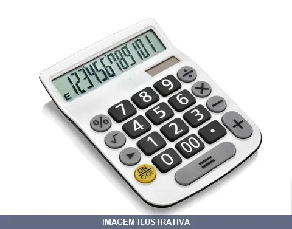
CALCULADORA GRANDE DIGITOS MX-C MAXPRINT
Calculadora com 12 dígitos de display para operações matemáticas básicas e avançadas. Adequada para cálculos comerciais, administrativos e técnicos em ambientes de trabalho. Facilita a realização rápida de operações numéricas em escritórios, lojas e canteiros de obra.
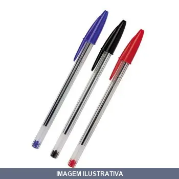
CANETA CRISTAL ESF P MEDIA AZUL CRISTA
CANETA ESFEROGRAFICA CRISTAL BIC AZUL (CAIXA COM 50 UNIDADES)

CANETA CRISTAL ESF P MEDIA PRETA CRISTA
CANETA ESFEROGRAFICA CRISTAL BIC PRETA (CAIXA COM 50 UNIDADES)

CANETA CRISTAL ESF P MEDIA VERMELHA CRISTA
CANETA ESFEROGRAFIGA CRISTAL BIC VERMELHA (CAIXA COM 50 UNIDADES)
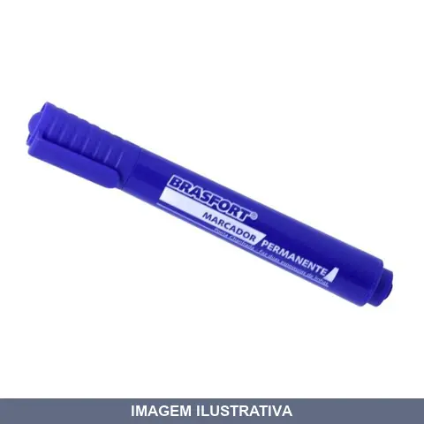
CANETA MARC PERMANENTE P GROSSA AZUL SC BRASFORT
Indicação de Uso: Marcação permanente em superfícies diversas, ideal para identificação e sinalização em trabalhos de construção, manutenção e projetos em geral. Material e Resistência: Tinta permanente à base de solvente com ponta grossa para marcações visíveis e duráveis. Vantagem Prática: Marca com precisão em materiais diversos, com secagem rápida e resistência ao desbotamento.
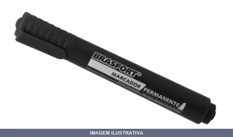
CANETA MARC PERMANENTE P GROSSA PRETA SC BRASFORT
Indicação de Uso: Marcar, riscar ou pintar superfícies lisas de papel, plástico, vidros, acrílico e madeira. Material e Resistência: Secagem rápida, não tóxica, baixo odor e resistente à água. Vantagem Prática: Ponta chanfrada oferece duas espessuras de linha.
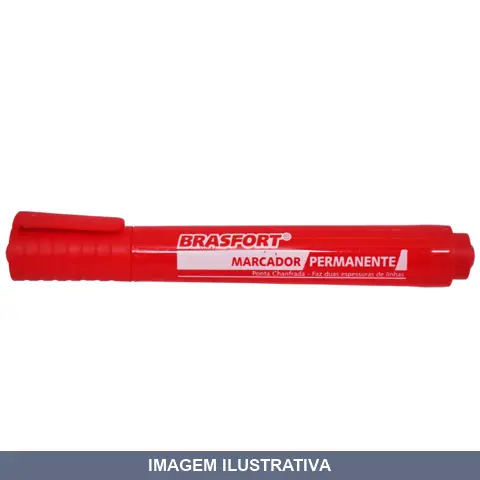
CANETA MARC PERMANENTE P GROSSA VERMELHA SC BRASFORT
Caneta marcadora permanente com ponta grossa, indicada para marcação em superfícies diversas. Tinta permanente resiste a exposição e não desvanece facilmente. Ideal para identificação, sinalização e marcação em trabalhos de pintura, hidráulica e manutenção em geral.
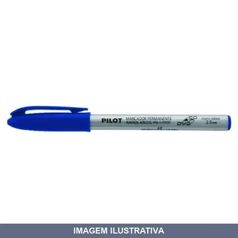
CANETA PARA CD/DVD E RETROPROJETOR AZUL PILO
Indicação de Uso: Retroprojetor, filmes, transparências e outras superfícies. Material e Resistência: Tinta à base de álcool, permanente, resistente à água e com secagem rápida. Vantagem Prática: Ponta reforçada com protetor metálico para maior durabilidade e traços precisos.
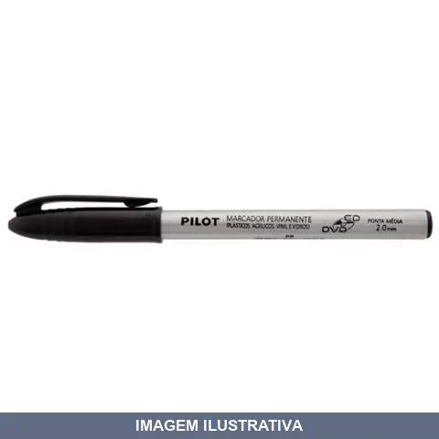
CANETA PARA CD/DVD E RETROPROJETOR PRETO PILO
Caneta para marcação em CDs, DVDs e retroprojetores. Ponta de 2.0mm em cor preta. Indicada para escrever em mídia ótica e superfícies de transparências. Material de escrita adequado para aderência em materiais plásticos e acetato.
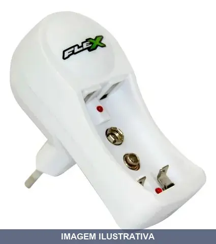
CARREGADOR DE PILHA AA/AAA BAT BIV GOLD
Indicação de Uso: Recarregar pilhas AA, AAA e baterias 9V para uso em controles remotos, brinquedos eletrônicos e outros dispositivos compatíveis. Material e Resistência: Pilhas recarregáveis de Ni-Mh. Vantagem Prática: Bivolt automático (100-240V), desligamento automático ao fim da carga, proteção contra curto-circuito, canais independentes de carga, LED indicador de carregamento, 2 portos para recarga simultânea de até 2 pilhas AA/AAA ou 1 bateria 9V.
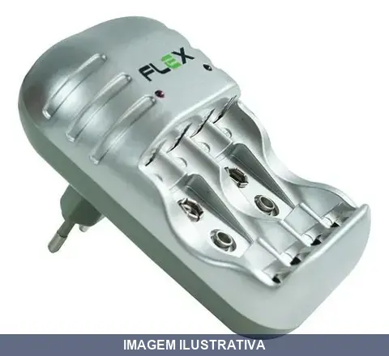
CARREGADOR DE PILHA AA/AAA BAT FLEX GOLD
Carregador de pilhas AA e AAA recarregáveis Flex Gold com proteção contra curto-circuito, 6 canais independentes para carregamento simultâneo e desligamento automático ao finalizar a carga. Voltagem de entrada bivolt automático (127/220V), saída 1.2V. Compatível com baterias Ni-Mh e Ni-Cd. Indicadores LED para acompanhamento do carregamento. Inclui cabo de força.
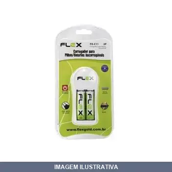
CARREGADOR DE PILHA E BAT AA OU AAA E BAT COM 2AA GOLD
Carregador para pilhas recarregáveis AA ou AAA. Acompanha 2 pilhas AA. Compatível com pilhas NiMH. Carregamento de até 2 ou 4 pilhas simultaneamente conforme modelo.
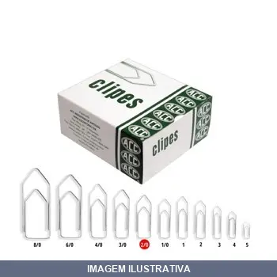
CLIPS PARA PAPEL COM REF 1579
Clips para papel tamanho 6/0, embalagem com 25 unidades. Produto destinado à fixação e organização de documentos e papéis em escritórios, residências e ambientes comerciais. Fabricado em metal, oferece resistência adequada para prender folhas com segurança. Solução prática para manter papéis agrupados e organizados.
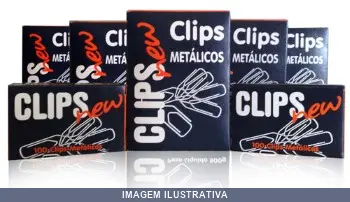
CLIPS PARA PAPEL GALVANIZADO COM ACC
Indicação de Uso: Fixação e organização de papéis, documentos e materiais em geral. Material e Resistência: Galvanizado, oferecendo proteção contra corrosão. Vantagem Prática: Facilita agrupamento e ordenação de documentos de forma rápida e segura.
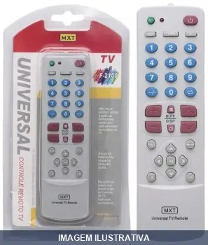
CONTROLE REMOTO UNIVERSAL MXT
CONTROLE REMOTO UNIVERSAL MXT REF:C01064 UNIVERSAL DE TV F-2100 NÃO REQUER CONFIGURAÇÃO, NÃO PERDE DADOS AO RETIRAR AS PILHAS, TECLA: PIP.
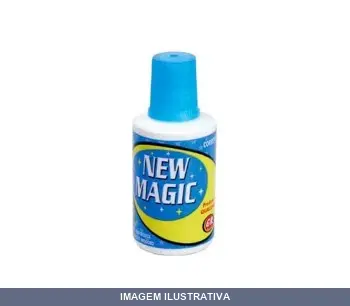
CORRETIVO LIQUIDO 18ML
Corretivo líquido para correção de erros em escritas e impressos. Indicado para uso em documentos, papel e superfícies similares. Aplicação prática e rápida com dispenser integrado. Apropriado para ambientes administrativos e escolares.
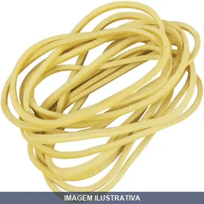
ELASTICO AMARELO 100GR COM UNID
Indicação de Uso: Fixação, organização e prensagem de materiais diversos em escritórios, oficinas e indústrias. / Material e Resistência: Borracha natural com alta elasticidade e durabilidade. / Vantagem Prática: Embalagem com 120 unidades, ideal para uso prolongado sem necessidade de reposição frequente.
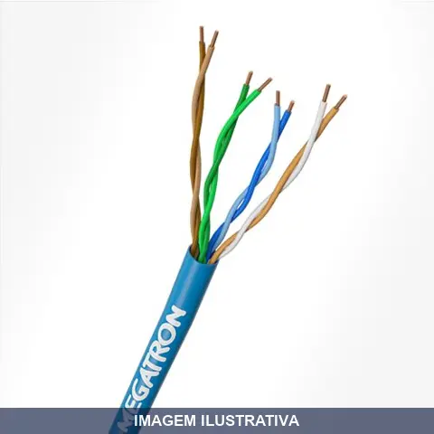
FIO CABO 4PAR 8VIA CAT 5E PARA DADOS AZUL MEGATRON
Indicação de Uso: Transmissão de dados em redes estruturadas de computadores e telecomunicações em ambientes internos. Material e Resistência: Cabo com 4 pares trançados (8 condutores), categoria 5E, impedância 100Ω, adequado para instalações de dados. Vantagem Prática: Proporciona conectividade confiável em sistemas de rede estruturada com compatibilidade para aplicações de até Gigabit Ethernet.
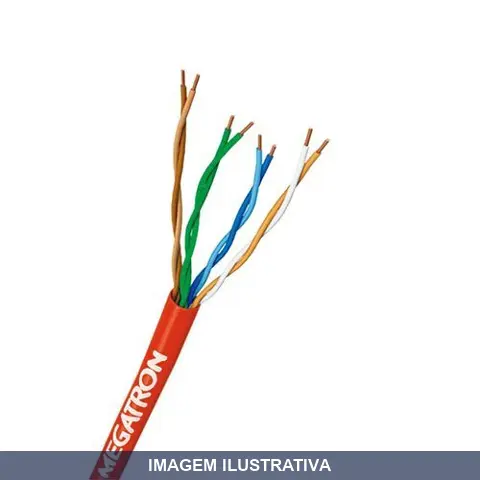
FIO CABO 4PAR 8VIA CAT PARA DADOS VERMELHO MEGATRON
Cabo de rede para transmissão de dados em estruturas de rede. Composto por 4 pares de condutores de cobre com isolação, reunidos sob capa externa em PVC com características retardante a chama. Indicado para instalações residenciais, comerciais e industriais. Cor vermelha para identificação visual em projetos de cabeamento estruturado.
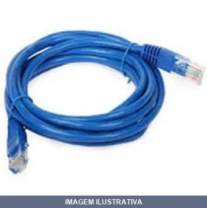
FIO CABO 4PAR 8VIA CFTV CAMERA INTERNEED 03M
Cabo multipares para sistema de câmera de vigilância CFTV. Composto por 4 pares e 8 vias, adequado para transmissão de sinal de vídeo e alimentação em instalações de segurança. Encartelado para facilitar transporte e armazenamento.
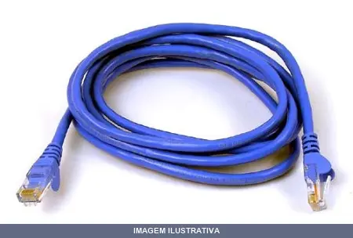
FIO CABO 4PAR 8VIA CFTV CAMERA INTERNEED 10M
Indicação de Uso: Instalação de sistemas de rede estruturada, telefonia e transmissão de dados. Material e Resistência: Cabo com 4 pares de condutores trançados, adequado para aplicações de rede local e comunicação. Vantagem Prática: Proporciona transmissão confiável de sinais em instalações de infraestrutura de rede.
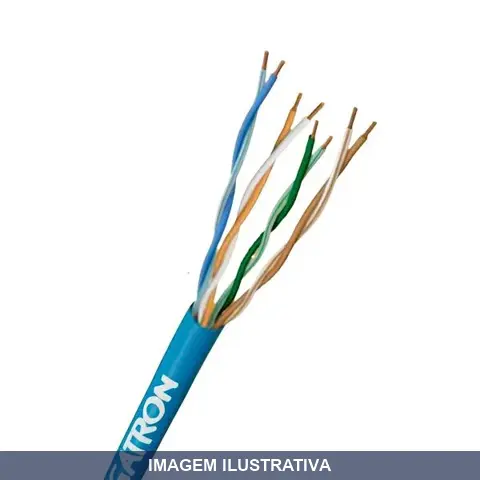
FIO CABO 4PAR 8VIA CFTV CAMERA ULTRA AZ MEGATRON
Indicação de Uso: Sistemas de CFTV com câmeras de segurança, DVRs e NVRs. Material e Resistência: Condutores em liga de Alumínio Acobreado (CCA), isolamento em material termoplástico com capa em PVC retardante a chamas, classificação CMX. Transmissão de até 100 MHz. Certificação ANATEL. Vantagem Prática: Transmissão de sinal estável e livre de interferências em instalações de monitoramento e alarme.
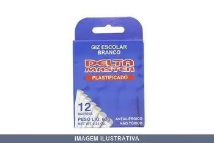
GIZ BRANCO COM BASTOES DELTA MASTER
Indicação de Uso: Marcação e traçado em superfícies diversas, ideal para obras, canteiros e marcenaria. Material e Resistência: Giz em bastão de composição tradicional, resistente ao manuseio. Vantagem Prática: Embalagem com 50 unidades para uso contínuo sem reposição frequente.
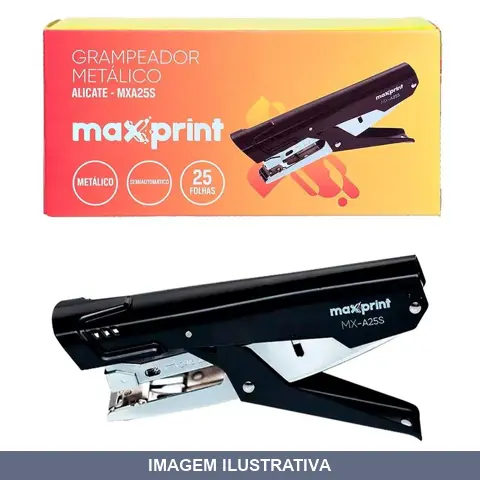
GRAMPEADOR METALICO ALICATE MXA25S CAP 25F FMAXPRINT
Grampeador metálico tipo alicate com formato ergonômico. Estrutura em aço carbono com abastecimento semiautomático. Grampeia até 25 folhas e utiliza grampos 26/6 e 24/6. Permite grampeamento sem superfície de apoio, otimizando praticidade. Composição: resinas termoplásticas, aço carbono e borracha.
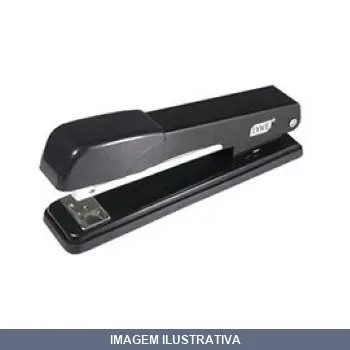
GRAMPEADOR METALICO MX-G20C CAP 20F FMAXPRINT
Grampeador manual com estrutura metálica, capacidade para 20 grampos. Indicado para trabalhos de fixação de papéis, documentos e materiais leves em geral. Construção em metal garante durabilidade no uso contínuo.
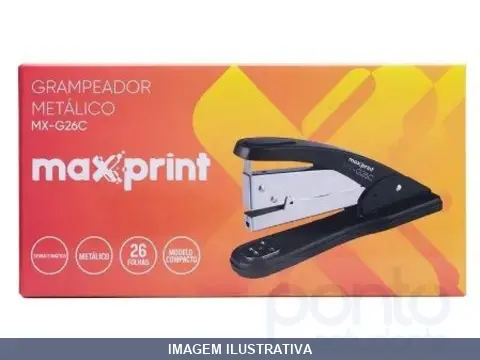
GRAMPEADOR METALICO MX-G26C CAP 26F FMAXPRINT
Grampeador metálico para fixação de materiais. Estrutura em metal proporciona durabilidade e resistência ao uso contínuo. Apropriado para trabalhos de encadernação, montagem e acabamento em oficinas, gráficas e trabalhos gerais de fixação.
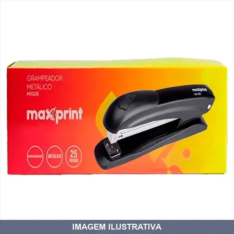
GRAMPEADOR METALICO MXG25S CAP 25F FMAXPRINT
Grampeador metálico semiautomático com capacidade para até 25 folhas. Construção em aço preto, compatível com grampos 26/6 e 24/6. Indicado para grampeamento de documentos em escritórios, cartórios, gráficas e papelarias. Estrutura robusta que oferece resistência e durabilidade.
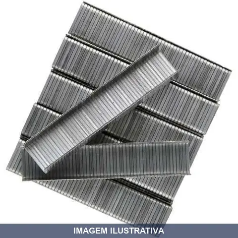
GRAMPO PARA GRAMPEADOR CX/ PLUS LOTUS
Grampo para grampeador em caixa com 1000 unidades. Indicado para fixação de documentos, papéis e materiais leves em uso com grampeadores convencionais. Material em aço, apropriado para aplicações gerais em escritório, casa e indústria.

GRAMPO PARA GRAMPEADOR DE MESA COM 5000
Indicação de Uso: Para fixação de documentos em grampeadores de mesa com capacidade de até 50 folhas. Material e Resistência: Arame de aço galvanizado, resistente à oxidação e corrosão. Vantagem Prática: Contém 5000 unidades em caixa econômica, compatível com grampeadores padrão 26/6, proporcionando custo-benefício para uso contínuo em escritórios, escolas e ambientes comerciais.
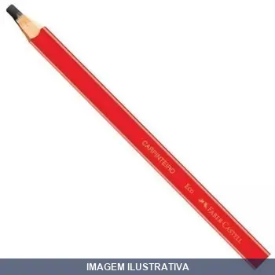
LAPIS CARPINTEIRO FABER CASTELL
Lápis para marcação em madeira e trabalhos de carpintaria. Fabricado em madeira com grafite, apropriado para traçar linhas de corte e referência em projetos de carpintaria e marcenaria. Ideal para profissionais e amadores em trabalhos com madeira.
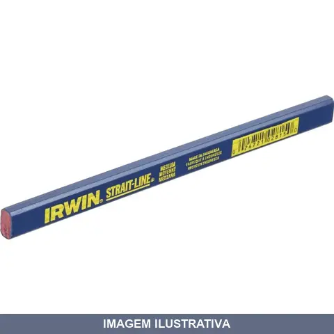
LAPIS CARPINTEIRO IRWIN
Lápis específico para marcação em superfícies de madeira. Material em grafite com formato alongado típico de lápis carpinteiro. Indicado para traçar linhas de corte, furos e medidas em trabalhos de carpintaria e marcenaria. Ponta resistente adequada para marcar em madeira bruta e acabada.
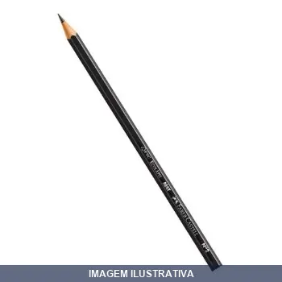
LAPIS ESCOLAR PRETO NO
Indicação de Uso: Escrita e desenho em papel, ideal para uso escolar e profissional. Material e Resistência: Grafite preto nº 02 de dureza média, apropriado para escrita clara e precisa. Vantagem Prática: Oferece traço consistente e uniforme para tarefas de escrita cotidiana.
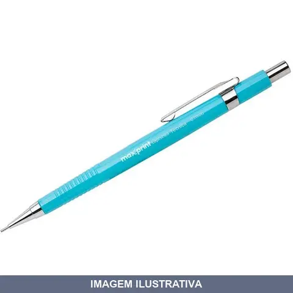
LAPISEIRA TECNICA
Lapiseira técnica com ponta 0,7mm em metal para traço preciso. Corpo metálico com ponta retrátil. Mecanismo de avanço preciso que evita quebra da grafite. Inclui borracha acoplada na ponta. Indicada para desenhos técnicos, escritura profissional e uso escolar.
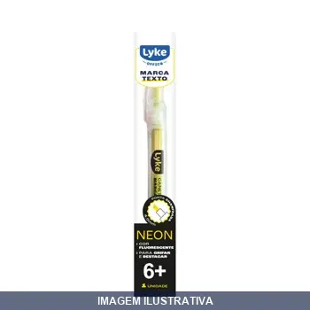
MARCA TEXTO AMARELO NEON LYKE
Indicação de Uso: Marcação e destaque de textos em documentos, cadernos e materiais de escritório. / Material e Resistência: Tinta à base de álcool com pigmentação amarelo neon, resistente ao desbotamento. / Vantagem Prática: Proporciona excelente visibilidade e contraste para realce de informações em leituras e estudos.
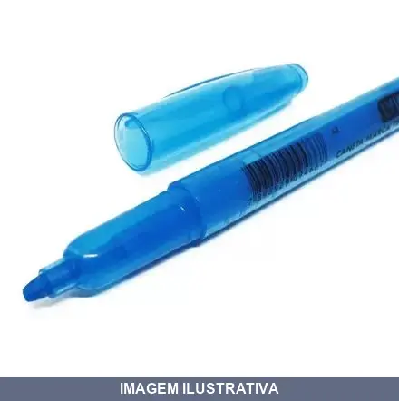
MARCA TEXTO AZUL NEON LYKE
Indicação de Uso: Ideal para sublinhar e destacar textos em estudos, trabalho e leitura. Material e Resistência: Corpo em resina termoplástica com ponta de feltro chanfrada. Tinta à base de corantes e solventes. Ponta resistente que permite traços finos e grossos. Vantagem Prática: Secagem rápida, atóxico e lavável. Não mancha roupa.
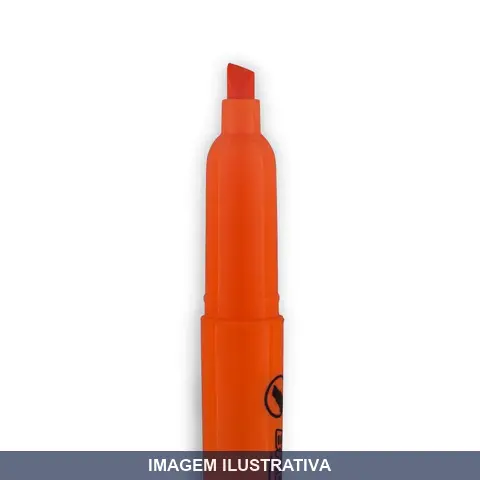
MARCA TEXTO LARANJA NEON LYKE
Marca texto com tinta fluorescente na cor laranja. Ponta chanfrada de 4mm que permite traços finos e grossos ao sublinhar e destacar textos. Composição: resina termoplástica, ponta de feltro e tinta à base de corantes e solventes. Secagem rápida. Ideal para uso escolar e escritório.
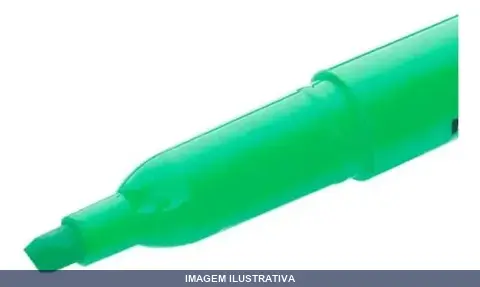
MARCA TEXTO VERDE NEON LYKE
Marca texto LYKE com tinta a base de água. Ponta chanfrada que permite traços finos e grossos para destacar textos. Composição: resina termoplástica, ponta de feltro e tinta a base de corantes e solventes. Tinta seca rapidamente sem transferência para o verso da página.
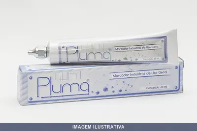
MARCADOR INDUSTRIAL VERDE PLUMA
Marcador industrial com ponta de pluma de 3mm, indicado para marcação e identificação em superfícies diversas em ambientes de trabalho, indústria e canteiros de obra. Tinta à base de pigmento em cor verde, visível e de fácil leitura. Adequado para marcar linhas, pontos de corte e identificações em madeira, metal, alvenaria e outros materiais.
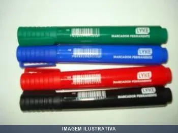
MARCADOR PERMANENTE AZUL
Marcador com tinta permanente na cor azul. Indicado para marcação em superfícies variadas como papel, plástico, metal e vidro. Tinta de secagem rápida e resistente ao apagamento. Ideal para identificação, rotulagem e trabalhos que exigem marcações duráveis.

MARCADOR PERMANENTE VERMELHO
Indicação de Uso: Marcação e identificação em superfícies diversas, ideal para identificar tubulações, equipamentos, caixas e materiais em ambientes internos e externos. Material e Resistência: Tinta permanente à base de solvente, resistente ao desbotamento e à umidade. Vantagem Prática: Secagem rápida e traço nítido que não desbota com facilidade.
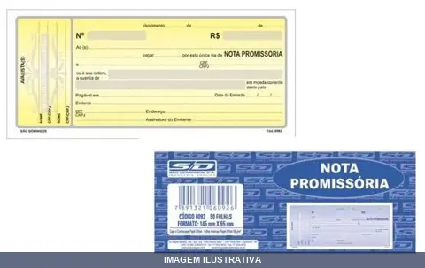
NOTA PROMISSORIA AMARELA COM FLS
Bloco de nota promissória em cor amarela com 50 folhas. Título de crédito indicado para formalizar promessas de pagamento em comércios, empresas e escritórios. Material em papel, adequado para registros de transações financeiras.
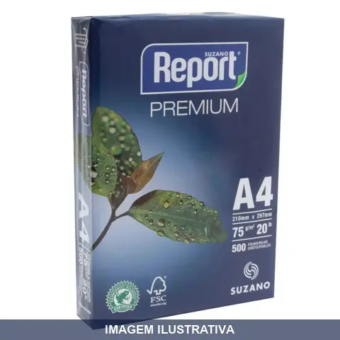
PAPEL A4 REPORT
Papel sulfite branco formato A4, gramatura 75g/m², embalado com 500 folhas. Indicado para impressão, escrita, fotocopias e fax em equipos diversos. Fornecido por Suzano com características de resistência, não atola em impressoras e mantém boa absorção de tinta.
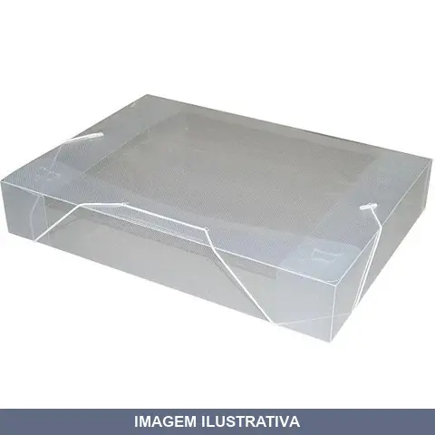
PASTA ABA ELAS.OF 55MM
Pasta com aba e elástico em polipropileno, formato ofício. Apresenta abas para fixação de documentos no interior e fechamento com elástico com terminação em plástico. Resistente a rasgos, umidade e sujeira. Design transparente permite identificar rapidamente o conteúdo. Apropriada para organização de documentos em ambientes profissionais, escolares e domésticos.
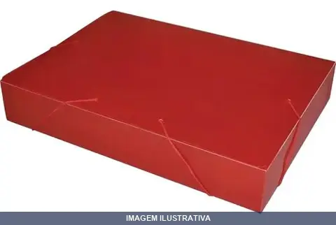
PASTA ABA ELAS.OF 55MM [013155]
Pasta com aba e elástico no formato ofício, na cor vermelha. Fabricada em polipropileno, material resistente e durável. Possui abas para fixação de documentos e fechamento com elástico com terminação em plástico. Indicada para organização e transporte de documentos em escritório, home office e ambiente escolar.
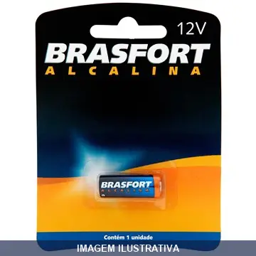
PILHA ALCALINA BATERIA 09V 6304 BRASFORT
Pilha alcalina de 9V, modelo MN21, adequada para alimentar dispositivos portáteis como detectores de fumaça, multímetros, guitarras eletrônicas e outros equipamentos que utilizam essa voltagem. Tecnologia alcalina garante melhor desempenho em comparação a pilhas de zinco-carbono.
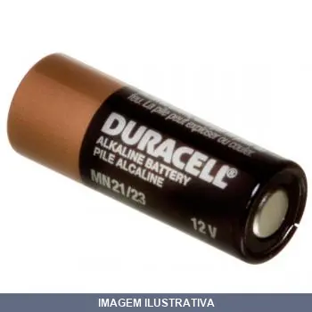
PILHA ALCALINA BATERIA 12V 21/23 C/2PC DURACEL
Bateria alcalina 12V. Indicação de Uso: alimentação de dispositivos portáteis e equipamentos que utilizam pilhas alcalinas de médio consumo de energia. Vantagem Prática: tecnologia alcalina proporciona maior durabilidade e desempenho em comparação com pilhas convencionais.

PILHA ALCALINA BATERIA 12V 6305 BRASFORT
PILHA BRASFORT ALCALINA MN21 12V CARTELA COM 1 PEÇA 6305
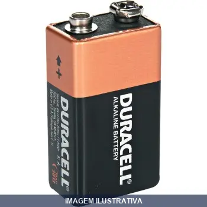
PILHA ALCALINA BATERIA DURACELL
PILHA DURACELL BATERIA 9 VOLTS (CARTELA COM 1 UNIDADE)
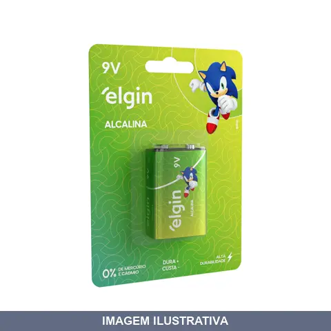
PILHA ALCALINA BATERIA ELGIN/ MAXPRINT
9V- BATERIA ALCALINA ELGIN 6LR61 (BLISTER COM 1 UNIDADE)
PILHA ALCALINA BATERIA RAYOVAC
Indicação de Uso: Dispositivos portáteis como alarmes, controles remotos, chaves automotivas e equipamentos de segurança que requerem bateria de 12V. Material e Resistência: Bateria alcalina 12V modelo A23/V23GA com encapsulamento cilíndrico. Vantagem Prática: Fornece energia estável e duradoura para equipamentos de uso intermitente.
PILHA ALCALINA GRANDE D 2PC DURAC
PILHA DURACELL ALCALINA GRANDE CARTELA COM 2 UNIDADES
PILHA ALCALINA GRANDE D 2PC ELGIN
D- PILHA ALCALINA ELGIN LR20 (BLISTER COM 2 UNIDADES)
PILHA ALCALINA MEDIA C 2PC DURACELL
Embalagem com 2 pilhas alcalinas 1.5V. Indicadas para lanternas, brinquedos, consoles de jogos portáteis, fechaduras eletrônicas e aparelhos do dia a dia. Potência confiável e longa duração, com tecnologia que preserva a carga por até 10 anos em armazenamento.
PILHA ALCALINA MEDIA C 2PC ELGIN
C-PILHA ALCALINA ELGIN LR14 (BLISTER COM 2 UNIDADES)
PILHA ALCALINA PALITO AAA 4PC ELGIN
Pilha alcalina tipo AAA, modelo LR03, ideal para alimentar diversos aparelhos portáteis como controles remotos, relógios, brinquedos e equipamentos eletrônicos de baixo consumo. Fornecida em embalagem com múltiplas unidades. Tecnologia alcalina garante maior durabilidade e desempenho em comparação a pilhas comuns.
PILHA ALCALINA PALITO AAA DURACEL
PILHA DURACELL ALCALINA PALITO AAA (CARTELA COM 2 PEÇAS)
PILHA ALCALINA PEQUENA AA 2PC DURACELL
PILHA DURACELL ALCALINA PEQUENA AA (CARTELA 2 PEÇAS)
PILHA ALCALINA PEQUENA AA 2PC RAYOVAC
PILHA ALCALINA AA PEQUENA ENCARTELADO COM 2 PEÇAS RAYOVAC
PILHA ALCALINA PEQUENA AA 4PC ELGIN
Pilha alcalina LR6 para uso geral em dispositivos eletrônicos portáteis. Indicação de Uso: Alimentação de controles remotos, brinquedos, lanternas, relógios e similares. Material e Resistência: Química alcalina com desempenho em temperatura ambiente. Vantagem Prática: Longa durabilidade e confiabilidade em equipamentos de baixo consumo.
PILHA BATERIA LITIO 3V CR2016 7440 BRASFORT
PILHA SMART BAT 3V CR2016 COM 5PEÇAS BRUNO FALOU PARA NÃO COMPRAR MAIS
PILHA BATERIA LITIO CR2016 82191 ELGIN
Bateria de lítio tipo botão/moeda CR2016 3V para equipamentos eletrônicos diversos, como relógios, calculadoras, balanças eletrônicas, computadores portáteis, placa mãe, chaves elétricas, brinquedos e alarmes. Composição: Lítio e Dióxido de Manganês. Livre de Mercúrio e Cádmio. Cartela com 5 unidades.
PILHA BATERIA LITIO CR2025 BRASFORT
Indicação de Uso: Relógios, controles remotos, brinquedos eletrônicos e aparelhos eletroeletrônicos portáteis. Material e Resistência: Célula de lítio com eletrólito orgânico, tensão nominal 3V, padrão IEC 60086. Vantagem Prática: Baixa taxa de auto-descarga e desempenho estável em ampla faixa de temperaturas.
PILHA BATERIA LITIO CR2032 BRASFORT
PILHA BRASFORT BATERIA 3V CR2032 COM 1 PEÇA REF:7442
PILHA BATERIA LITIO CR2032 RAYOVAC
Indicação de Uso: Relógios, controles remotos, calculadoras, brinquedos e outros dispositivos eletrônicos portáteis de baixa corrente. Material e Resistência: Bateria de lítio primária (não recarregável) de 3V com capacidade de 230 mAh. Formato botão com resistência à oxidação e baixa taxa de autodescarga para funcionamento prolongado. Vantagem Prática: Funcionamento estável e confiável em equipamentos de precisão. Formato botão compacto permite instalação em espaços reduzidos. Livre de
PILHA BATERIA PARA INSTRUMENTOS DE METROLOGIA A- 82317 ELGIN
Pilha para instrumentos de metrologia. Indicação de Uso: Alimentação de instrumentos de medição, multímetros e equipamentos portáteis de diagnóstico. Material e Resistência: Composição alcalina, livre de mercúrio e cádmio, atende Resolução Conama 401. Vantagem Prática: Proporciona autonomia estendida em aplicações de uso intermitente.

PILHA BATERIA PARA INTRUMENTOS DE METROLOGIA LR 82194 ELGIN
Pilha para instrumentos de metrologia, modelo LR 44. Adequada para alimentação de dispositivos de medição e instrumentação que utilizam este padrão de célula. Indicada para uso em medidores de pressão, multímetros e outros equipamentos portáteis de metrologia que demandem este tipo de fonte de energia.
PILHA BATERIA PARA INTRUMENTOS DE METROLOGIA LR- ZAAS
Indicação de Uso: Paquímetros digitais, traçadores, relógios comparadores e demais instrumentos de metrologia. Material e Resistência: Pilha alcalina com formato de botão (moeda). Vantagem Prática: Fornece energia confiável para instrumentos de precisão em ambiente de trabalho.
PILHA GRANDE COMUN D2 PANASONIC
PILHA PANASONIC GRANDE D2 COM 1 PEÇA transferido para caborge
PILHA RECARREGAVEL AA 2700MAH 82174 ELGIN
Pilha recarregável tipo AA com capacidade de 2700mAh e voltagem de 1,2V. Tecnologia Ni-MH com até 1000 ciclos de recarga. Composição com 0% de mercúrio e cádmio. Testada e aprovada pelo INMETRO, em conformidade com a resolução Conama 401. Indicada para brinquedos, câmeras fotográficas, controles remotos e dispositivos de alto consumo de energia. Vem em blister com 2 unidades.
PILHA RECARREGAVEL AA 2900MAH FLEX GOLD
Pilha recarregável AA 2900mAh, tecnologia Ni-MH com tensão nominal de 1,2V. Bateria híbrida que combina as vantagens das pilhas alcalinas com a economia das recarregáveis, pronta para uso imediato. Indicada para videogames, câmeras digitais, mouses, lanternas e aparelhos eletrônicos em geral. Embalagem com 2 unidades.
PILHA RECARREGAVEL AAA 1100MAH FLEX GOLD
Pilha recarregável tamanho AAA com capacidade de 1100mAh. Composição: Ni-MH com voltagem 1,2V. Material: Ni-Mh, plástico e metal. Pode ser recarregada diversas vezes, reduzindo custos com pilhas descartáveis. Indicada para aparelhos eletrônicos de alto consumo como controles remotos, brinquedos, câmeras, lanternas, mouses e teclados sem fio.
PILHA RECARREGAVEL AAA 900MAH 82168 ELGIN
Indicação de Uso: Dispositivos portáteis de baixo consumo como controles remotos, brinquedos, lanternas e câmeras digitais. Material e Resistência: Pilha recarregável Ni-MH sem mercúrio nem cádmio. Suporta até 1000 ciclos de carga com voltagem de 1,2V. Vantagem Prática: Fonte de energia renovável e reutilizável. Aprovada pelo INMETRO conforme Resolução Conama 401.
PILHA RECARREGAVEL BAT 250MAH 82215 ELGIN
Indicação de Uso: Brinquedos, microfone, controle de vídeo games e produtos de alto consumo de bateria. Material e Resistência: Bateria recarregável Ni-MH com 0% de metais pesados, suporta até 1000 recargas. Vantagem Prática: Energia renovável para aparelhos diversos, reduzindo custos operacionais com substituição frequente de pilhas.
PILHA RECARREGAVEL BAT 250MAH FLEX GOLD
Pilha recarregável de 9V com capacidade de 250mAh. Indicada para alimentar dispositivos portáteis que utilizam pilhas de 9 volts, como detectores de fumaça, multímetros e equipamentos eletrônicos diversos. Permite múltiplos ciclos de recarga, reduzindo a necessidade de substituição frequente.
PLASTICO FUROS A4 MEDIO REF -A4
Envelope/saco plástico transparente com 4 furos para arquivo de documentos em fichários e pastas. Material em polietileno/poliestireno com espessura média, borda reforçada, solda resistente. Não amassa, protege fotos, documentos e papeladas contra danificações.
PORTA ALVARA VERTICAL PT REF 047
Porta de alvarás vertical em PVC preto com visor em cristal transparente. Indicação de Uso: Proteção e exposição de documentos como alvará e CNPJ em ambientes comerciais e corporativos. Material e Resistência: PVC resistente com visor cristal. Vantagem Prática: Ilhós para fixação e penduração na parede, mantendo documentos organizados e protegidos.
POST IT AMARELO (ANOTE COLE COM FLS) LYKE
Bloco de adesivos autocolantes para anotações. Ideal para marcação, lembretes e organização de tarefas em ambientes de escritório, residencial e comercial. Papel com adesivo que permite fixação em superfícies lisas e reutilização múltipla. Prático para anotar informações temporárias que necessitam ser removidas sem deixar resíduo.

POST IT CANARIO COM FLS REF 4346
Bloco adesivo reposicionável para anotações rápidas e lembretes. Possui adesivo de baixa aderência que permite fácil remoção sem danificar as superfícies. Material 100% reciclado em amarelo canário. Fabricante: 3M.
PRANCHETA ACRILIGA SUP. METAL FUME
Indicação de Uso: Organização e apoio de papéis, fichas e documentos durante escrita em mãos, sem necessidade de mesa ou encosto. Material e Resistência: Confeccionada em acrílico com prendedor em liga metálica, apresenta acabamento fumê que reduz reflexo. Vantagem Prática: Prendedor metálico garante fixação segura dos papéis. Bordas arredondadas proporcionam acabamento seguro ao manuseio.
PRANCHETA MADEIRA SUP. METAL FUME
Prancheta em eucatex com garra de metal em ferro galvanizado. Indicação de Uso: Ideal para anotações, preenchimento de documentos e organização em escritórios, escolas e clínicas. Material e Resistência: Confeccionada em chapa de eucatex (duratex) com pegador de metal em chapa de ferro galvanizado, oferecendo durabilidade e resistência para uso diário. Vantagem Prática: Mantém folhas e documentos firmemente presos, facilitando o trabalho em campo ou em ambientes com movimento.
PRENDEDOR DE PAPEL JOCAR 32MM
Prendedor de papel para fixação e organização de documentos. Indicado para uso em escritórios, residências e ambientes comerciais. Funciona por pressão, permitindo rápida fixação e remoção de papéis sem danificá-los. Ideal para organizar notas, listas e documentos diversos em murais, quadros ou superfícies adequadas.
PRENDEDOR DE PAPEL JOCAR 41MM
Indicação de Uso: Prendedor de papel para organização e fixação de documentos, papéis e materiais em escritórios, consultórios e ambientes administrativos. Material e Resistência: Construído em metal, resistente ao uso repetido e à corrosão. Vantagem Prática: Mantém papéis agrupados e organizados de forma segura, evitando dispersão de documentos.
RADIO COMUNICADOR RC G2 PARA N 4163002 INTELBRAS
Indicação de Uso: Comunicação portátil profissional e personal para equipes em campo, ambientes comerciais e industriais. Material e Resistência: Construção resistente adequada para uso frequente em diversas condições. Vantagem Prática: Facilita coordenação e troca rápida de mensagens entre usuários sem necessidade de rede móvel.
RECIBO ALUGUEL FS COM CANHOTO TAMOIO
Bloco de recibos pré-impressos com folhas destacáveis em papel sulfite de 56g/m². Contém 50 folhas com canhoto destacável para facilitar o registro e controle de pagamentos de aluguel. Papel resistente e robusto para múltiplos usos.
RECIBO COMERCIAL FS COM CANHOTO SD
Indicação de Uso: Bloco para registrar recebimentos comerciais em empresas, escritórios e balcões de atendimento. O canhoto fica no bloco para controle e comprovação. Material e Resistência: Fabricado em papel offset 56g/m², certificado FSC, com 50 folhas numeradas sequencialmente para facilitar rastreamento. Vantagem Prática: Compacto e fácil de manusear, permite emissão rápida de recibos com cópia integrada para cliente e estabelecimento.
RECIBO COMERCIAL FS SEM CANHOTO
Indicação de Uso: Bloco para documentar pagamentos e recebimentos em transações comerciais. Ideal para comércios, empresas, escritórios e prestadores de serviço. Material e Resistência: Papel Offset 56 g/m² com 50 folhas. Certificado FSC. Formato 139mm x 89mm. Vantagem Prática: Bloco padronizado com campos pré-impressos. Sem canhoto, facilitando limpeza e organização.
SUPORTE PAPEL TOALHA INTER BRANCO TRILHA
TOALHEIRO PLASTICO PARA PAPEL INTERFOLHADO ( CAIXA COM 12 UND ) Designer elegante e moderno, linhas suaves que se adaptam a qualquer ambiente. Comporta papéis toalha interfolha 2 ou 3 dobras. Material leve e resistente, fácil instalação e abastecimento. Características do dispensador Dimensões (alt.x larg.x prof.): 320 mm x 250mm x 130 mm Material: Plástico Polipropileno e Composto Aditivado Peso: 0,488 grs. Abertura: Sistema com chave Utilização: Papel toalha interfolha 2 ou 3 dobras T- 0801
SUPORTE PARA FITA EMBA MANUAL BRASFORT
Indicação de Uso: Aplicação e corte de fita adesiva para embalagem de caixas e pacotes. Material e Resistência: Corpo e suporte de PVC (azul e bege) com lâmina em aço carbono, capacidade para fitas de 2 polegadas. Vantagem Prática: Realiza corte preciso da fita adesiva mantendo-a pronta para o próximo uso, oferecendo praticidade em operações de embalagem.
SUPORTE PARA FITA EMBA MANUAL H- 3M
DISPENSADOR MANUAL H-190 APLICADOR FITA USO GERAL 569/15
TELEFONE PLENO COM CHAVE CINZA INTELBRAS
Telefone fixo com fio, modelo Pleno com chave de bloqueio, cor cinza. Indicado para mesa ou parede. Oferece 3 volumes de campainha, 2 timbres, funções Flash, Redial/Rediscar e Mute/Mudo. Chave de bloqueio de teclado evita ligações indesejadas e acionamentos acidentais. Compatível com sistemas de discagem por tom e pulso. Produto fabricado no Brasil com garantia de 12 meses.
TELEFONE PLENO SEM CHAVE CINZA INTELBRAS
TELEFONE INTELBRAS PLENO CINZA ARTICO P/N: 4080055 INTELBRAS PLUG MAIS: 10795 O Telefone PLENO chegou para levar a medalha de ouro. É resistente, prático e tem design moderno, totalmente brasileiro. Este nasceu para brilhar. Ideal para casa e escritório, alta resistência e durabilidade. Intelbras, o jeito certo de falar! Conta com 3 volumes de campainha, 2 tipos de toque, funções Flash, Rediscar e Mudo, além de permitir instalação nas posições mesa ou parede.
TELEFONE PLENO SEM CHAVE PRETO INTELBRAS
TELEFONE INTELBRAS PLENO PRETO PN REF: 4080051 O Telefone PLENO chegou para levar a medalha de ouro. É resistente, prático e tem design moderno, totalmente brasileiro. Este nasceu para brilhar. Ideal para casa e escritório, alta resistência e durabilidade. Intelbras, o jeito certo de falar! Conta com 3 volumes de campainha, 2 tipos de toque, funções Flash, Rediscar e Mudo, além de permitir instalação nas posições mesa ou parede.
TELEFONE SEM FIO TS COM ID INTELBRAS
Telefone sem fio com identificador de chamadas. Tecnologia DECT para comunicação sem interferências. Recursos de comunicação interna, conferência e transferência de chamadas entre aparelhos compatíveis. Indicado para ambientes residenciais e comerciais que demandam mobilidade e praticidade nas comunicações internas.
TESOURA ARREMATE BRASFORT
Indicação de Uso: Tesoura de arremate para remover linhas e fios em acabamentos, bordados e costuras. Não recomendada para corte de tecidos e papel. Material e Resistência: Lâminas em aço inox com tratamento térmico para corte preciso e durabilidade. Cabo em polipropileno com design anatômico. Vantagem Prática: Conforto durante o uso com cabo ergonômico, permitindo aplicação em diversas atividades de acabamento e domésticas.
TESOURA CABELEIREIRO BRASFORT
Indicação de Uso: Tesoura específica para corte de cabelo, adequada para profissionais de cabeleireiro e barbeiro. Material e Resistência: Construída em aço, oferecendo durabilidade para uso profissional. Vantagem Prática: Lâminas afiadas para cortes precisos e limpeza, facilitando o trabalho diário em salões e barbearias.
TESOURA ESCOLAR INOX TRAMONTINA
Indicação de Uso: Atividades escolares e trabalhos com papel em geral. Material e Resistência: Lâmina em aço inox de alta durabilidade. Cabo em polipropileno com formato ergonômico. Vantagem Prática: Corte preciso, seguro e confortável para crianças.
TESOURA ESCOLAR VERMELHA BRASFORT
Indicação de Uso: Tesoura escolar adequada para cortes de papel e materiais escolares. Material e Resistência: Estrutura em metal com cabo ergonômico. Vantagem Prática: Ferramenta compacta e segura para uso em ambiente escolar e educacional.
TESOURA MULTIUSO JOCAR
Indicação de Uso: Tesoura versátil para corte de diversos materiais em aplicações gerais, domésticas e profissionais. Material e Resistência: Construção em aço, própria para resistir ao uso repetido em cortes variados. Vantagem Prática: Design multiuso reduz necessidade de múltiplas ferramentas de corte, sendo prática para trabalhos diversos.
TESOURA MULTIUSO NOLL
Indicação de Uso: Corte de chapas metálicas e materiais diversos. Material e Resistência: Construída em aço, com lâminas resistentes ao desgaste. Vantagem Prática: Ferramenta manual para trabalhos de corte direto sem necessidade de energia elétrica.
TESOURA USO GERAL INOX BRASFORT
Indicação de Uso: Para corte de objetos em geral, ideal para cortar tecidos, papéis, plásticos e borrachas. Material e Resistência: Lâminas em aço inox com cabo revestido em PVC. Vantagem Prática: Proporciona praticidade e eficiência para uso doméstico, escritório ou ambiente profissional.
TESOURA USO GERAL INOX TRAMONTINA
TESOURA USO GERAL INOX 8 SUPERCORTE Lâmina em aço inox 8''. Cabo em polipropileno. Orientações Gerais Uso seguro e adequado: Tenha cuidado ao manusear produtos cortantes e perfurantes e mantenha-os fora do alcance de crianças. Para garantir a durabilidade dos produtos, recomenda-se secá-los bem após a lavagem, mesmo sendo em máquina de lavar louças. Benefícios do Produto 1. Lâmina com maior durabilidade do fio devido ao tratamento térmico. 2. Lâmina sem ponta, proporcionando maior segurança. 3.